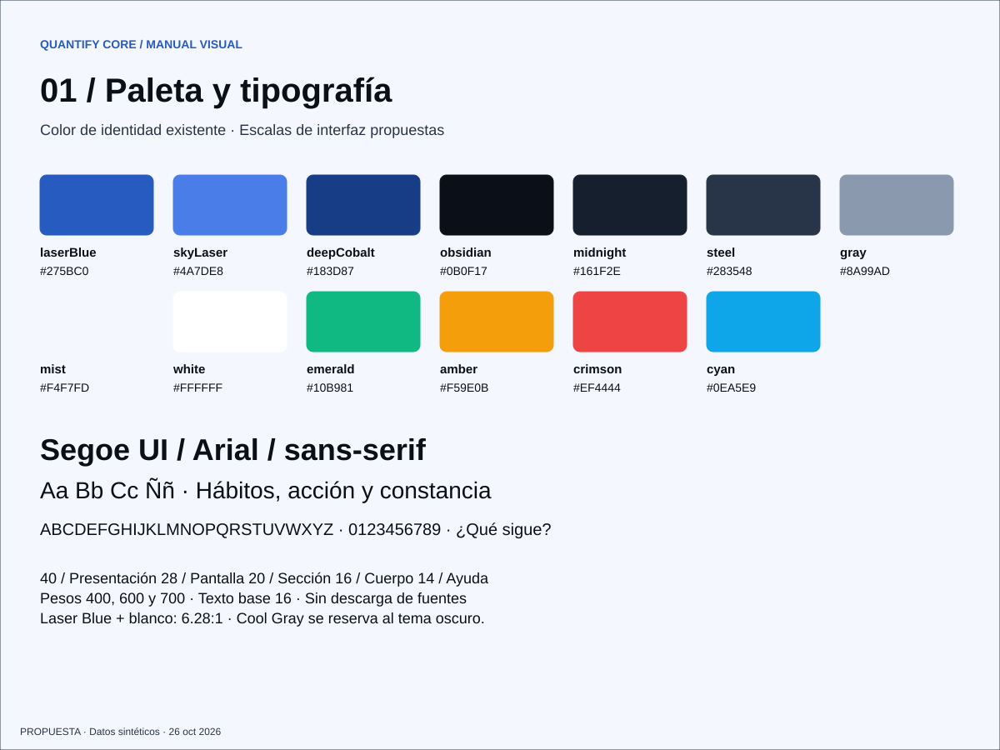
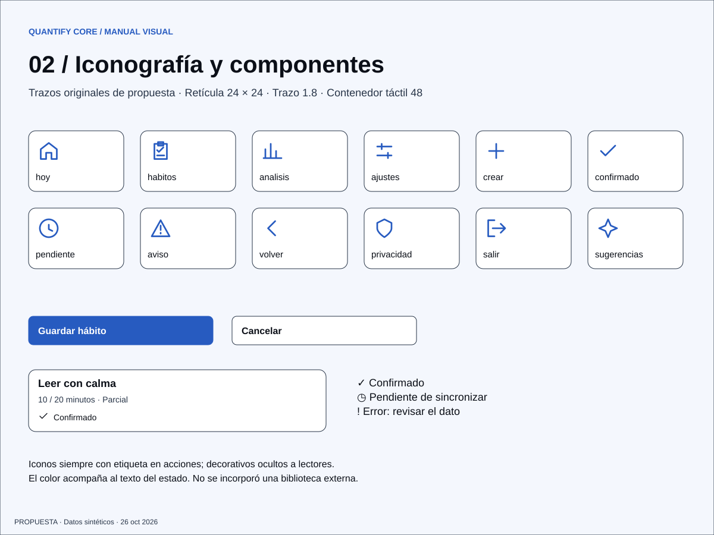
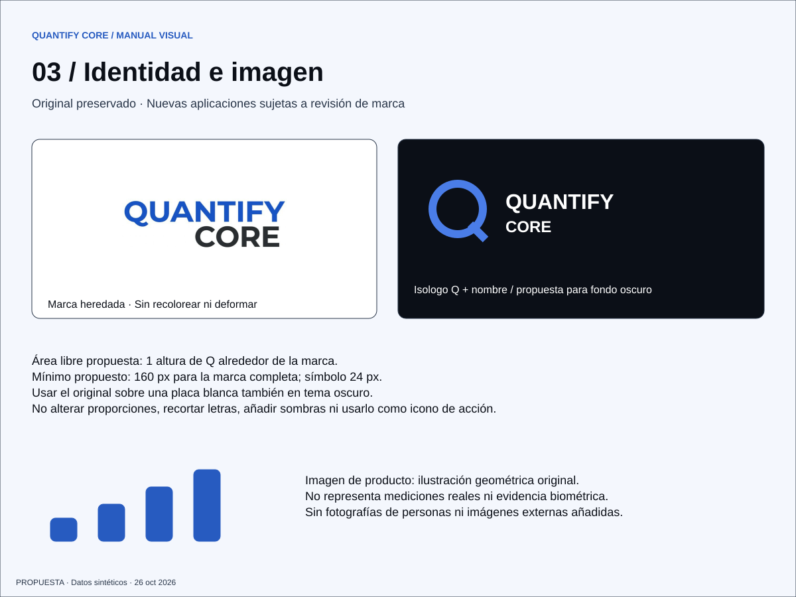

IDENTIDAD EXISTENTE / APLICACIONES PROPUESTAS
Un lenguaje visual.
Muchas formas de avanzar.
La identidad Laser Blue conecta las pantallas de Quantify Core. Este manual presenta decisiones de revisión; no sustituye los activos originales ni declara una biblioteca de producto implementada.
01 / Color y tipografía
La paleta canónica permanece. La escala del sistema evita descargar fuentes y conserva caracteres del español.

02 / Iconos que acompañan el significado
Doce trazos originales con retícula común. Las acciones y estados siempre conservan una etiqueta textual.

03 / Identidad e imágenes
El logo heredado se conserva sin cambios. El isologo para fondo oscuro es una propuesta por aprobar.
